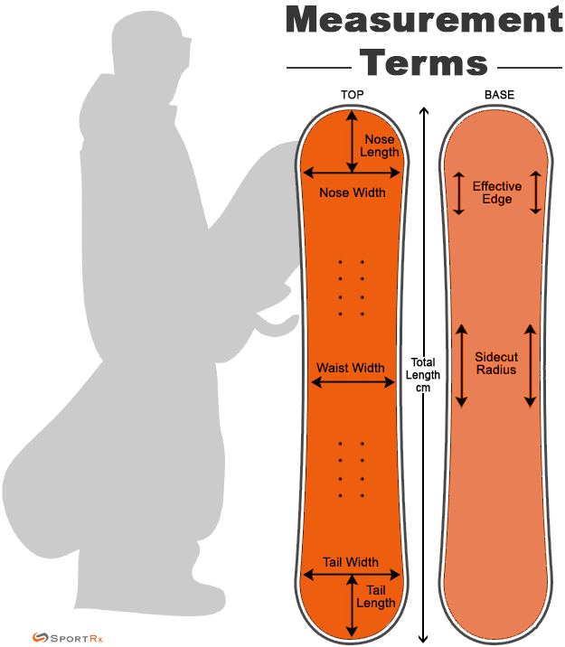
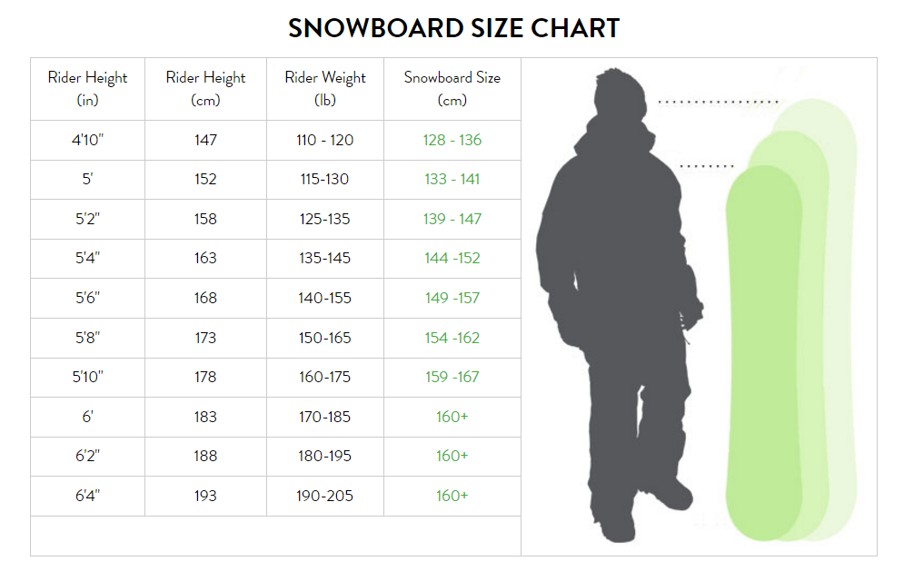

The purpose of this website is to help you find the right geat for the perfect ride. The following video gives us an quick overview on some essentials we need to consider when choosing a right snowboard.
Understanding Snowboard Measurements
Before we go too far. Let's learn what is the basic terms of a snowboard.
There are two main types of snowboard measurements: size details and tech details.
Size details are most often used to describe the physical dimensions of a snowboard.
Length
Waist Width
Nose Width, Tail Width & Taper
Sidecut Radius & Sidecut Depth
Snowboard measurements that are indicated with non-number attributes are mostly used to explain tech details.
Bend
Flex
Binding Size
Weight Range

How to pick the right snowboard size?

It’s important to keep your preferred riding style in mind when choosing the length of your board.
Freestyle-focused riders, for example,
will gravitate towards shorter board lengths to cut down on weight and make it easier to pull off tricks.
They also don’t need extra edge hold or stability since they’ll mostly be riding at moderate speeds and on intermediate resort runs.
On the flip side, many freeride-focused riders will want a longer board to provide more edge hold,
float and stability in steeper terrain and a variety of snow conditions.
If you’re just starting out and are looking for a more All Mountain board for all-around riding,
check out the size chart on the left to help choose the snowboard length range that’s right for you.
×
What type of snowboard should I get?
The main reason you want to define your snowboarding style is for equipment choices.
Your board, binding and boot choices in particular will be largely influenced by what your "style" is.
I put snowboards into five categories to help you find the right type of board for the style of snowboarding you do:
All-mountain: best for any terrain
Freestyle: best for the park
Freeride: best for ungroomed snow in any terrai
Powder: best for deep powder snow
Splitboard: best for the backcountry
All-mountain:
Most boarders ride all-mountain boards. Because of their versatility, all-mountain boards are good for beginners who are still learning what terrain they like.
Freestyle:
They are good for riders who want a lively ride anywhere on the mountain, or those who like to push their limits in terrain parks; they’re not so good for stability or cruising fast on hard snow.
Freeride:
They are designed for adventurous riders who spent most of their time off groomed runs. They are often directional boards, meaning they are meant to be ridden with one end always facing downhill.
Powder:
Everything about a powder snowboard is designed with deep snow in mind, from the shape of the nose and tail to the flex of the board and the location of the binding inserts.
Splitboard:
These backcountry-specific boards split in half to create two skis and permit climbing on untracked backcountry slopes. You later reconnect the halves and ride downhill.
Snowboard Camber and Rocker Profile
When we talk about a snowboard bend, we are referring to how it looks from the side (its profile).
In general, a snowboard profile will have at least one of the following bends: rocker, camber, or flat.
However, it is important to note that modern snowboards may include more than one type of profile.
This multi-bend construction is called a hybrid profile.
And while there are several factors that impact how a snowboard performs (sidecut, flex, taper, effective edge, nose/tail radius, shape, et cetera), board bend is one of the most important.
Below are several common types of snowboard bends.
Camber Snowboards
Rocker Snowboards
Flat Snowboards
Hybrid Camber Snowboards
Hybrid Rocker Snowboards
Directional Camber Snowboards
Camber
A Camber snowboard has an upward curve between the feet.
When depressed or flexed,
this profile “snaps” back to its original shape generating energy that can be used to hold an edge.
Type of Riding
Camber profile snowboards are generally great for all riders and riding styles.
Aggressive riders generally prefer camber boards for high-speed carving and the “poppy” feeling of linking turns.
Park riders often like camber snowboards, as the profile provides a high degree of edge control and a snappy flex for precise maneuvers on jumps, halfpipe walls, and even jibs.
Rocker
A Rocker snowboard has a downward curve between the feet, with the nose and tail raised up.
This profile causes the sidecut of the board to depress fully when the rider is up on-edge,
allowing deep elbow-dragging carves.
Rocker snowboards are often described as loose and playful,
since the boards are already curved and don’t carry as much loaded energy between transitions.
Type of Riding
Rocker profile snowboards work well at low speeds in powder and are great for intermediate all-mountain riders.
Rocker profile snowboards are good in slushy conditions.
Rocker snowboards generally provide less precise control and stability on hardpacked conditions (when compared with other camber bends).
Flat
A Flat Top snowboard has no camber or rocker between the feet.
This flat profile makes the board stable and predictable.
Type of Riding
Flat profile boards that have a softer flex are great for beginners and intermediate riders looking for an easy-to-ride board that can progress with their riding.
Park riders often prefer flat profile boards for the consistent flex that is good for jibbing.
Hybrid Camber
The rocker in the tip and tail are great for turn initiation and float in powder,
whilst the camber underfoot adds stability, pop, speed and increased edge-hold.
The length of the camber section, and the rocker sections often varies.
And how pronounced the rocker and camber are differs too, depending on the board.
And those variations can lead to a very different feeling ride.
Type of Riding
A board with longer rocker sections – or very subtle amounts of camber in the camber sections are often good for beginners – with the camber offering stability and the rocker sections helping to make it a catch-free ride and for ease of turn initiation.
Hybrid rocker profiles that are mostly camber – or where the camber in the camber sections is highly pronounced – aren’t as suitable for beginners.
A Directional Hybrid Camber - having more camber towards the tail and more rocker towards the nose – is often used on freeride boards.
Hybrid Rocker
A hybrid rocker snowboard is a hybrid board bend that has rocker between the feet and small sections of camber underneath the feet.
The rocker in this profile makes the board loose and lifts up the nose and tail while the camber under the feet provides extra edge grip on hardpacked conditions.
Type of Riding
Hybrid Rockerprofile snowboards are ideal for riders who want the playful feel of full rocker in a more responsive edge-to-edge ride.
Park riders may like hybrid rocker boards for their balance of playfulness and edge grip when turning or popping off jumps.
Directional Camber
A Directional Camber snowboard has an upward curve between the feet,
but the entire stance is shifted towards the tail and the front curve ends before the contact point in the nose.
Type of Riding
Directional camber profile snowboards are great for anyone who rides powder.
All-mountain riders often have a directional camber profile board in their quiver for variable condition resort days,
as the flat zone in the nose is also great for initiating carves on hardpacked snow.
What is snowboard shape?
Snowboards come in all sorts of shapes and sizes.
The following section would outline what the different snowboard shapes are and what style each shape is designed for.
There are a large number of variations of each shape type available but all of those shapes should fit somewhere in the following broad categories:
A true twin shape is completely symmetrical.
If you cut a true twin in half exactly down the middle you would end up with two identical pieces of board.
This means that the:
Nose and the tail are the same length and width
Bindings are typically centered on the board, meaning:
The distance from the center of the front binding to the contact point at the nose of the board
is the same as the distance from the center of the back binding to the contact point on the tail of the board
(this is often referred to as centered on the effective edge)
In the case of true twins it’s also true that the waist (center) of the board
is equal distance to the very tip of the nose and the very tip of the tail
– since the nose and tail are both the same length
A true twin has exactly the same flex in the nose and tail
Who Rides True Twin?
True Twin boards are most suited to Freestyle and All-Mountain-Freestyle riders.
Asymmetrical Twin
A common variation on the true twin is the asymmetrical twin (asym).
Asym twins are designed to give you a more similar feel turning no both your heel edge and toe edge.
There are 3 ways that a board can be asymmetrical:
Asymmetrical sidecut
Asymmetrical contact points
Asymmetrical flex (between the heel side and toe side, rather than between nose and tail)
Directional
A Directional shape is designed to be optimal going in one direction.
A directional board will usually have a number of things that make it directional,
which could be some or all of the following – but needs to be more directional oriented than a directional twin:
Longer nose than tail (always)
Different shaped nose and tail (sometimes)
A setback stance (a majority of the time)
A directional sidecut
A directional camber profile (often)
Directional flex pattern (different flex in and towards the tail vs in and towards the nose)
Who Rides True Twin?
Directional boards are mostly used for all-mountain riders and freeriders.
Most, if not all, of the time you will be riding in one direction.
And the board is optimized to make riding in one-direction better – particularly for carving, speed and powder.
Directional Twin
The directional twin at first glance can appears to be a true twin but is subtly directional.
Inside the contact points a directional twin is a twin (hence the “twin” in the name)
– but outside the contact points the nose is a little longer than the tail
– but the width at the contact points will be the same.
And then there’s usually setback stance (setback along the effective edge).
A directional twin is usually labelled as such when:
It has a setback stance – but usually no more than 20mm (3/4″)
Has a nose that is slightly longer than the tail
Who Rides Directional Twin?
A directional twin board is generally suited to anyone riding all-mountain-freestyle or all-mountain.
It won’t be quite as comfortable riding switch but will still be able to handle switch fine.
Tapered Directional
A tapered directional shape is like a directional shape but with one major difference
– the width of the widest point of the nose (contact point)
will be wider than the width of the widest point (contact point) on the tail.
Often on a board with a tapered directional shape everything about the nose and the tail is different, including:
A wider nose than tail (tapered shape)
A longer nose – often significantly longer
Flex – the tail is often stiffer than the nose, to promote the tail to sink and the nose to float
Shape
Who Rides Tapered Directional?
This one is definitely all about the freeriders and those who want a powder specialist board.
A tapered directional shape is usually designed to provide the best float in powder – promoting the tail to sink and the nose to rise.
And can also be good for maneuverability in the trees – with a short flicky tail you can kick around.
What is snowboard flex rating?
There are broadly two different types of flex in a snowboard - longitudinal and torsional.
Longitudinal flex is the flexibility of the snowboard length ways (from nose to tail).
This is what is typically referred to when talking about the flex of a board.
Torsional flex is the flex width ways (from edge to edge).
This is generally not considered by people when deciding on their snowboard purchase
and typically there isn't a rating given out by manufacturers for this.
What level of flex you should be going for will depend on your style and ability level.
Centered VS Setback
Snowboards are designed to have the rider's feet either centered on the snowboard (lengthways) or setback.
Setback basically means that your back binding will be set up closer to the tail (back) of your snowboard
than your front binding is from the nose (front).
Your front binding will be closer the centre of your snowboard (the waist) than your back binding.
How is your Snowboard Riding Skill Level?
The right board can make learning much easier for beginners
and if you are an expert rider you want a board that can do everything you need it to.
One of the specs you will see when you are buying is whether the board is for Beginner, Intermediate, Advanced or Expert.
Often it is the case the board may cover a range - i.e. Beginner to Advanced.
Check out the following to see which level are you in.
Beginner Level 1:This is your first day (or first couple of days). You are brand new. You start out learning how to control your speed and get some distance down a slope without bailing! You are learning how to stop yourself without falling.
Beginner Level 2:You are now relatively comfortable snowflaking, that is guiding yourself down the slope on the same edge. You are becoming more adept at being able to stop yourself without falling. You are probably starting to try linking turns but not very successfully just yet.
Beginner Level 3:You can now link turns in both directions (i.e. from your heel edge to your toe edge and your toe edge to your heel edge) on gentle slopes. Your turns are probably C shape turns at this point. You might be branching out into the intermediate runs but not so comfortable linking turns on those yet. Sliding (falling leaf) on intermediate runs is probably within your realm though.
Beginner Level 4:You can now link turns in both directions (i.e. from your heel edge to your toe edge and your toe edge to your heel edge) on green (beginner) and intermediate (blue) slopes. Your turns are now becoming "S" shape turns. You can now control your speed well.
Intermediate Level 5:You are now comfortable linking turns on any beginner or intermediate slope and you can do so at increasingly high speeds - and you have full control of the speed your riding (even if it means having to out on the brakes at times). You can attempt black runs - but it's not always pretty! You are getting better at navigating more uneven terrain.
You might be trying little natural jumps or small jumps in the park, if that interests you - and you're starting to learn how to ride switch.
You might be starting to try some carving and your S turns are getting smoother - you still skid them sometimes, especially on steeper terrain, but at times you are getting cleaner lines. And on powder days, you might be starting to explore off the groomer.
Intermediate Level 6:You can now link turns at reasonably high speeds and on steeper slopes. Your technique is smoother and you can ride black runs with a fair level of comfort. You are very confident and comfortable bombing intermediate runs.
You may also be venturing off groomer, quite a bit more, including trees (off piste).
Your turns are becoming smoother (not at the stage of never skidding, but skidding is becoming less frequent). You can stop on a dime when needed, and can turn sharply when needed. You are starting to learn other types of turns, like down-unweighted turns and proper carves.
If you are leaning towards freestyle riding, then your switch riding is getting smoother. You can comfortably do ollies and are confident on small to medium jumps. You might be 50/50 or board sliding boxes, and maybe even a pipe or rail. You can do 180s confidently or are on your way to doing them and might be attempting larger rotations. You probably have at least one grab in your repertoire. And you might be trying out the pipe.
Advanced Level 7:You are now a very confident snowboarder who can tackle almost any terrain on and off groomer (piste). You might be starting to do backcountry excursions too, if that interests you.
You are comfortable riding and turning at speed. You have mastered multiple turn types - including carving & down unweighted turns - and leave thin clean lines behind you. Riding switch has become second nature too.
If you are park inclined, then small to medium jumps with smooth confident 180s & 360s are in your bag of tricks for sure (and larger rotations are coming in, if that interests you). Large jumps are no problem for you now too - whether you might be just straight airing them - or performing spins. You probably have multiple grabs that you are comfortable performing.
You can confidently ride larger rails and pipes and are getting more technical on them - like 180s onto and off, tail and nose presses etc.
You can, and often do, use the mountain like a park if you are so inclined.
Expert Level 8+:Depending on your chosen style:
Freeriding: You can bomb any slope, chute, bowl, you name it, and are confident on any terrain. On backcountry excursions you are finding more and more challenging terrain, hucking cliffs and you have a fluidity, flow and cleanness to your riding. All turn types are mastered and you can adapt to any situation.
Freestyle: Large to XL jumps with 180s, 360s, 540s and larger rotations. Taking off and landing switch is no issue. Inverted aerials might now be in your realm too. On rails, boxes, pipes etc - you are creative and confident. Using multiple tricks and creativity on natural features too.
As an expert level rider, there’s still always room to improve of course, but you have mastered snowboarding and your board has become an extension of your body.
Snowboard Selection in Powders
Data Source
Please click here to visit the original dataset.
The data set is about the snowboard performance in poweder condition.
There are altogether 10 variables and 390 unique values.
Variables include:
Brand: Snowboard manufacturing companies.
Model: Companies' snowboard models.
Riding Style: Where to use that snowboards.
Riding Level: Which level people use that snowboards.
Shape: Shape of snowboards.
Camber Profile: Camber profile of snowboards.
Stance: Where the foot stands on snowboards.
Flex: Flexibility of snowboards.
Price: Price of snowboards.
Powder: The power of snowboards in powder snow
bar chart on performance in powder vs setback distance